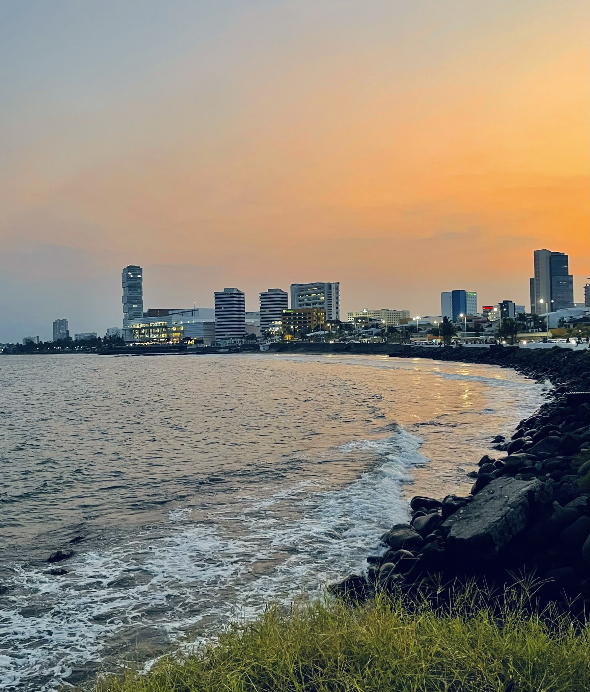

Hospedaje Hermoso


Descubre este acogedor departamento en Boca del Río, Veracruz. Ideal para parejas o viajeros de negocios con una ubicación excelente.
Ver en Airbnb
Una gran casa para familias, rodeada de naturaleza y tranquilidad. Perfecta para desconectar del estrés urbano en Ixmiquilpan, Hidalgo.
Ver en Airbnb
Una encantadora casa en Ixmiquilpan, Hidalgo. Ideal para parejas o pequeñas familias que buscan paz y privacidad.
Ver en Airbnb"El lugar es muy agradable y muy cómodo, la ubicación es excelente y las indicaciones de llegada y entrada fueron muy fáciles de entender, Juan estuvo al pendiente y atendió las recomendaciones (Boca del Río)."
- Dianna"Excelente ubicación, buen trato, se siente como un hogar, excelente para vacacionar por Ixmiquilpan y sus balnearios."
- FernandoExplora las mejores actividades y lugares turísticos que ofrece Boca del Río. Desde playas hasta restaurantes locales, disfruta de una experiencia inolvidable.
 Ver actividadesExplora las mejores actividades y lugares turísticos que ofrece Ixmiquilpan, Hidalgo. Desde aguas termales hasta restaurantes locales, disfruta de una experiencia única.
Ver actividades